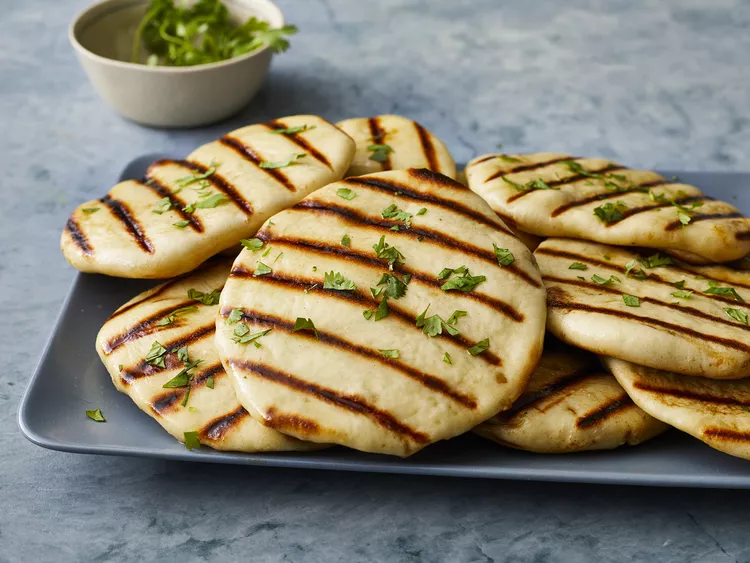

Naan

This homemade naan recipe makes soft, chewy naan with a buttery taste. It is the best I have tasted outside of an Indian restaurant. Simply delicious eaten warm brushed with melted butter or served with your favorite curry.